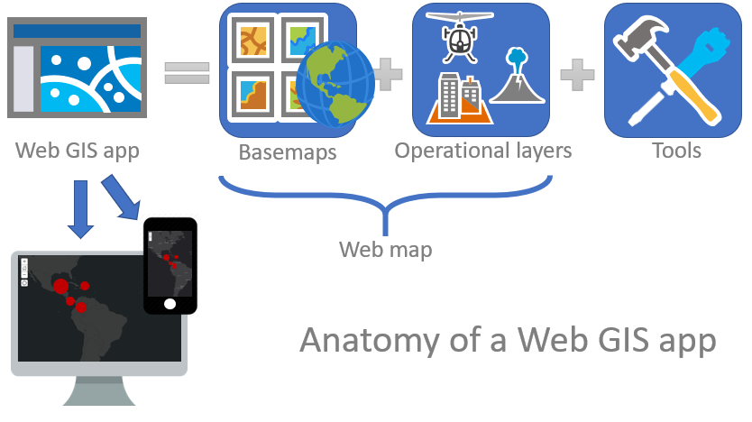
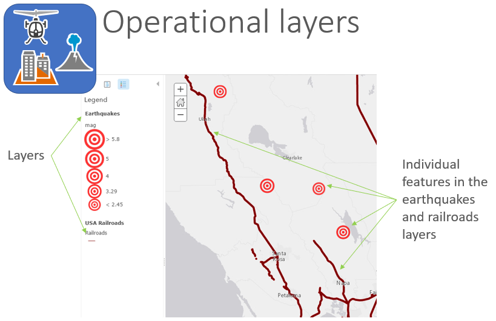
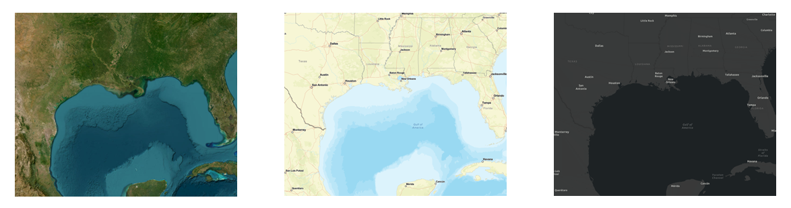
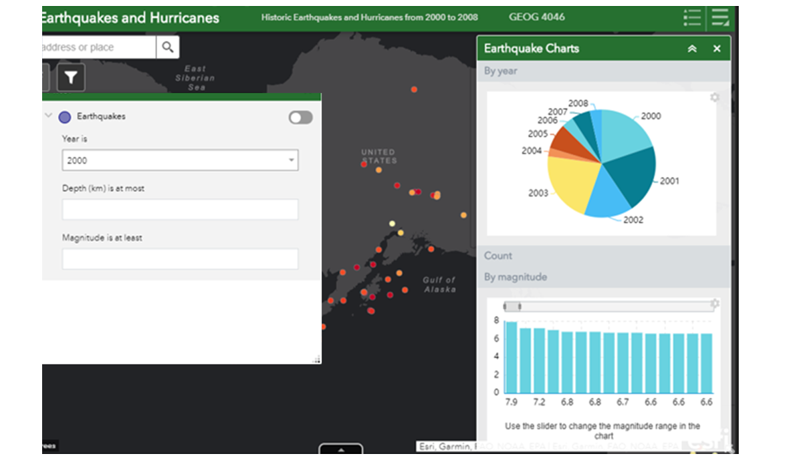

Lesson 1
What is Web GIS...or GIS for that matter?
Terms: geographic information, geographic information system, Web GIS, layers, feature, basemap
In my position doing IT in a geography department, something started happening a decade or so ago. People started asking how to put their maps on webpages. Faculty, students, local businesses, and people from state government wanted guidance on how to not just put a picture of a map online, but build an interactive map where users could zoom, pan, and click features. They wanted the Google Maps experience but for exploring their own data and multimedia. Interactive web maps had been around since the 1990s, but by the end of the 2000s, the software had matured enough to become widely accessible, and the public had become familiar enough with Google Maps to demand such a thing. Therefore, I was pulled into the world of “Web GIS”, learning the software and techniques for mapping and sharing data online through websites, desktop applications, and mobile apps.
The term “Web GIS” needs further explanation, but first I should define GIS and geographic information.
Any type of information that can be tied to a location on Earth can be considered geographic information (or similar terms, spatial data, geospatial data, location information). The border of a country is geographic information. Election results by precinct are geographic information. Social media posts tagged at a restaurant location are geographic information.
A geographic information system (GIS) is software to map, query, and analyze location-based information (GIS can also mean geographic information science, referring more broadly to a discipline focused on spatial analysis). GIS software can display geographic information on a map on your screen, and also perform spatial calculations like finding the distance between two points on the map or finding all features within a certain distance of other features (e.g., all hospitals in New Orleans within one mile of an interstate highway).
The software can do this because of coordinate systems, like latitude and longitude, which allow datasets to be placed at numerically identifiable locations on Earth’s surface. GIS software can then do the math on these datasets to calculate statistics, distance, and more complex geometry. These analyses and their visualization on maps can reveal patterns and relationships among things and phenomena on Earth.
GIS started out as desktop applications, but like other software it has evolved to take advantage of the Internet so that geographic information is not just a file saved on your computer, but a web resource similar to a webpage viewed in a browser or mobile app, shared with potentially millions of viewers. A type of web resource called a web service has emerged as a fundamental part of modern GIS, making it possible to integrate your data into third-party apps, and share huge amounts of data online (think satellite imagery covering the planet for the past 40 years), even to a low-capacity device like a phone.
The transmission of geographic information over the Internet is a fundamental aspect of Web GIS, requiring certain techniques and considerations not typical of traditional GIS. To give it a definition, Web GIS is any web-based system used to analyze, visualize, share, or organize geographic information. This course will introduce the major concepts and provide experience with Web GIS applications through hands-on exercises.
Typically, this means creating a website displaying an interactive map including data layers, a basemap, and tools for using the map.

Figure 1. Anatomy of a Web GIS app, or a website displaying a map. It will typically contain operational layers, basemaps, and tools for using the map. Icons derived from “Getting to Know Web GIS, 3rd Ed.”
Layers consist of collections of graphics drawn on a map, including points, lines, polygons, and imagery. The graphics in a layer share a common theme, such as points representing airports in one layer, lines representing rivers in another layer, polygons representing national parks in another layer, and satellite imagery in another layer. Point, line, and polygon objects in a layer are known as features, and the layer is sometimes called a feature layer. The layers containing the main data you are communicating with your map are considered operational layers. These features have attributes; for example, a layer of airport locations might have a table of attributes including the airport’s name, identifier code, and number of runways.

Figure 2. Operational layers can contain vector features or raster images. Features are points, lines, or polygons representing geographic data on a map.
A layer that acts as a background for reference or context is the basemap. Basemaps often consist of streets and boundaries or satellite/aerial imagery.

Figure 3. Basemaps act as a background to provide a reference or context for operational layers.
Web GIS apps can also offer various tools to help users interact with the map and its data. For example, tools might allow you to:
- Navigate the map – zoom, pan, search an address, switch basemap
- Filter – “Show only earthquakes from the year 2000”
- Summarize – “Count the number of earthquakes for each magnitude”
- Run spatial analysis – “Show all railroads within 5 miles of an epicenter”

Figure 4. Web GIS app with tools that let users interact with the map and data.
To see some examples of Web GIS applications in action, look through these websites:
- Google Earth
- Louisiana 2016 flood imagery
- Local weather radar
- COVID-19 dashboard
- Story map about global wildfires
- Video game map
- Large Orion Nebula image - not a map but uses Web GIS techniques
Finally, before moving on to the Concepts of Web GIS lesson, let’s jump into making a website with a map on it (a “web app” in ArcGIS Online terms). Go to Assignments and proceed to Assignment 1, which follows Esri’s “Get Started with ArcGIS Online” tutorial, meant for newcomers to Web GIS.
TopBack to Lessons